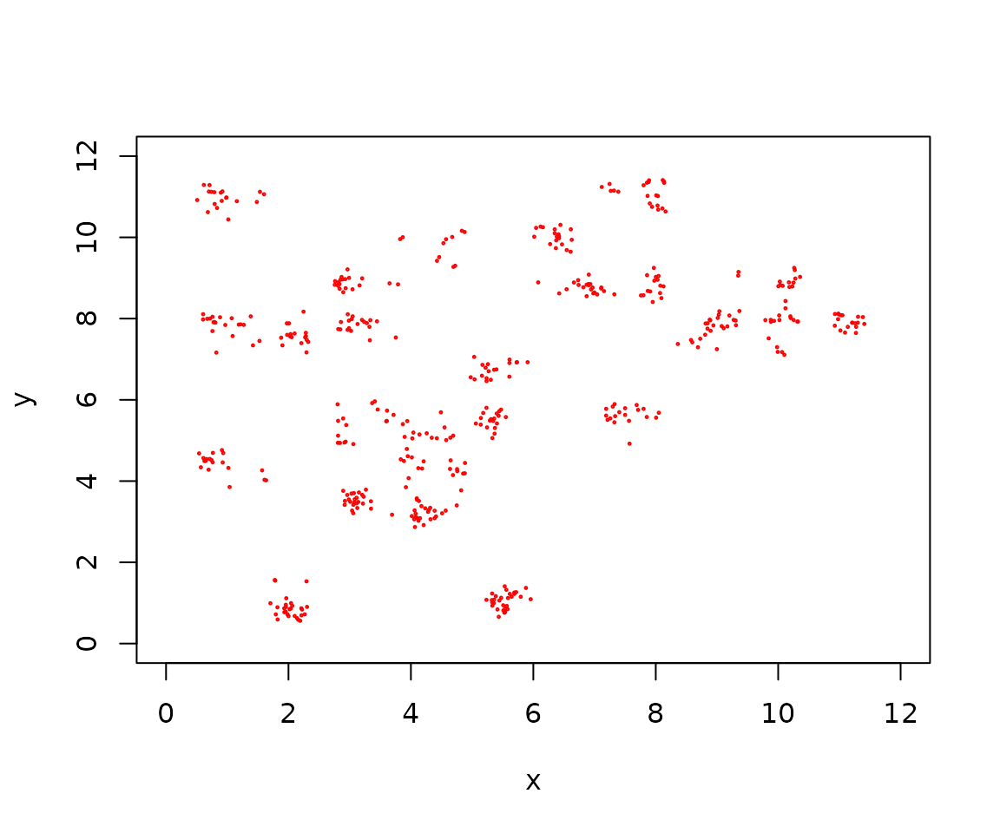
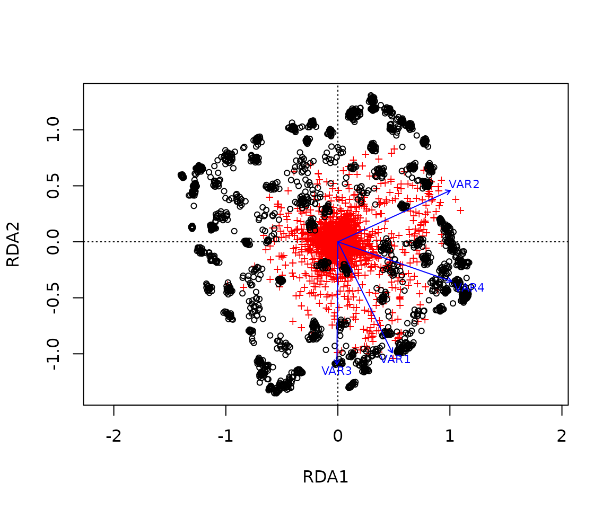
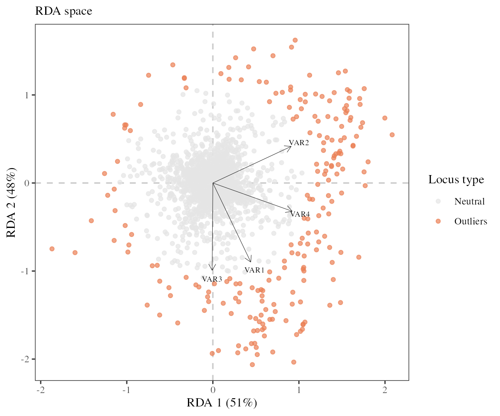
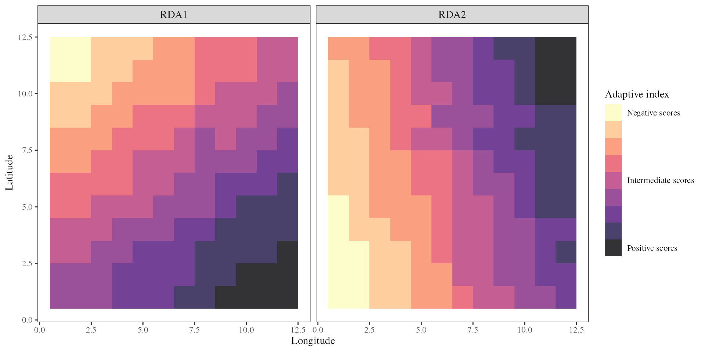
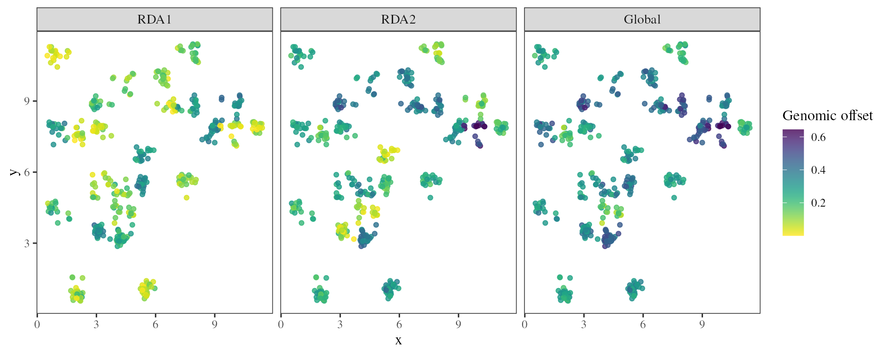
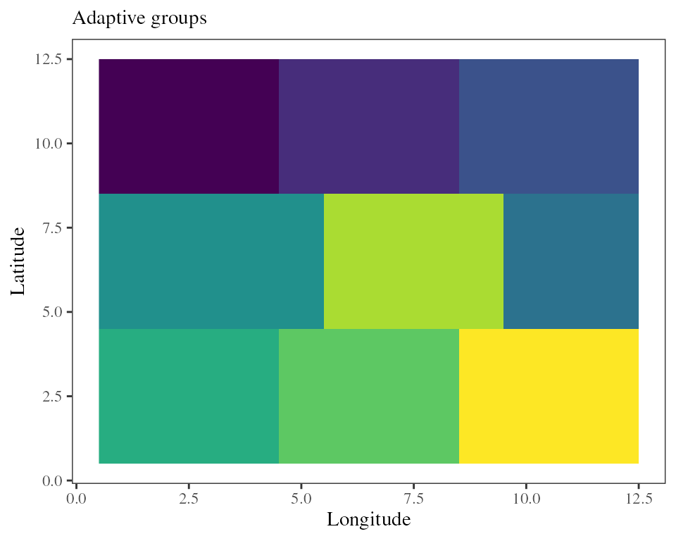

Vignette package rdadapt v1.0
Thibaut Capblancq & Maya Gueguen
2024
Source:vignettes/vignette_tutorial.Rmd
vignette_tutorial.RmdIn the following, we show how the rdadapt package can
perform:
- genome scans for selection,
- adaptive index projection on the landscape,
- estimation of genomic offsets
- identification of co-varying modules of adaptive loci or
- identification of adaptive groups of individual or populations.
We show how to run the package using data simulated with Slim3 as described in Gain et al. 2023.
The maladapt dataset contains genotypes (Y) for
2036 simulated individuals on a 12*12 grid constrained by two causal
environmental variables (Var1 and Var2). Fitness
(fitness) was measured for all individuals before and after a
brutal change in environment.
To run the package, you need to install it (and load it) using the following command lines:
library(devtools)
install_github("landscape-genomics/rdadapt")
library(rdadapt)
library(vegan) ## rda
## Other libraries essentially used for plotting purposes
library(terra)
library(reshape2)
library(ggplot2)
library(viridis)
library(wesanderson)
-
Data Preparation
Data Preparation
maladapt dataset contains informations about individuals
and populations, and corresponding genetic informations.
## [1] "pop" "coord" "Y" "xx.current" "xx.future"
## [6] "causal1" "causal2" "fitness"1.1 Metadata
## Population labels
pop <- maladapt$pop
## Individual coordinates
coord <- maladapt$coord
## Genotypes
Y <- maladapt$Y
Y[1:5, 1:5]
## Current and future climate values
xx.current <- maladapt$xx.current
xx.future <- maladapt$xx.future
## Rasterize the variables
xx.ras.current <- rast(data.frame(x = rep(1:12, time = 12)
, y = rep(1:12, each = 12)
, aggregate(xx.current, by = list(ceiling(coord$x)
, ceiling(coord$y))
, mean)[, -c(1, 2)])
, type = "xyz"
, crs = crs("epsg:4326"))
xx.ras.future <- rast(data.frame(x = rep(1:12, time = 12)
, y = rep(1:12, each = 12)
, aggregate(xx.future, by = list(ceiling(coord$x)
, ceiling(coord$y))
, mean)[, -c(1, 2)])
, type = "xyz"
, crs = crs("epsg:4326"))1.2 Sub-sample populations
## Randomly select only 25 populations to mimic an empirical dataset
samp <- which(pop %in% sample(1:100, 25, replace = FALSE))
Y.samp <- Y[samp, ]
xx.current.samp <- xx.current[samp, ]
xx.future.samp <- xx.future[samp, ]
coord.samp <- coord[samp, ]
-
Genome Scan
Genome Scan
2.1 Identifying loci under selection using RDA
The rdadapt function performs redundancy analysis and
computes p-values to test for outliers based on loci extremeness along a
distribution of Mahalanobis distances estimated between each locus and
the center of the RDA space using a certain number of axes (K).
The function accommodates individual genotypes or allele frequencies.
The first step of the procedure is to regress the genetic matrix against the environmental predictors using a RDA model.

We then have to choose a number of RDA axes to include when conducting the genome scan.
screeplot(RDA_env, main = "Eigenvalues of constrained axes")Looking at the proportion of variance explained by each axis, we decided to use the first two axes.
## Running the function with K = 2
rdadapt_env <- rdadapt(RDA = RDA_env, K = 2)One critical step when conducting a genome scan is to set a pertinent p-value threshold to identify the outlier loci. Here, we used a Bonferroni correction to account for multiple testing.
## P-values threshold after Bonferroni correction
thres_env <- 0.01 / length(rdadapt_env$p.values)
## Identifying the loci that are below the p-value threshold
outliers <- (1:ncol(Y))[which(rdadapt_env$p.values < thres_env)]
length(outliers)## [1] 215The function found 215 outliers.
Once the outliers have been identified, it can be useful to visualize their distribution in comparison with neutral loci using either a RDA biplot.

-
Adaptive Index
Adaptive Index
3.1 Adaptively enriched genetic space
The 215 putative adaptive loci can be used as multivariate response in a new “adaptively enriched” RDA, using the same environmental predictors as explanatory variables.
## Adaptively enriched RDA
RDA_outliers <- rda(Y[, outliers] ~ ., xx.current)A RDA biplot allows us to visualize the relationship between the outlier loci and the underlying environmental predictors.
 Note the RDA space is slightly different here than
above because only the outlier loci were used to train the model. The
goal being to remove any potential noise coming from non-adaptive loci
but if we are unsure of the outlier identification we can use the model
including all loci instead.
Note the RDA space is slightly different here than
above because only the outlier loci were used to train the model. The
goal being to remove any potential noise coming from non-adaptive loci
but if we are unsure of the outlier identification we can use the model
including all loci instead.
3.2 Adaptive index across the landscape
The adaptive_index function will use the scores of the
environmental variables along the RDA axes to calculate a genetic-based
index of adaptation for each environmental pixel of the landscape. This
index is estimated independently for each RDA axis of interest using the
formula:
Where a is the climatic
variable score (loading) along the RDA axis, b is the
standardized value for this particular variable at the focal pixel, and
i refers to one of the n different variables used in
the RDA model.
## Running the function for all pixels
res_RDA_proj_current <- adaptive_index(RDA = RDA_outliers
, K = 2
, env = xx.ras.current
, env_mask = NULL
, method = "loadings")The adaptive_index function thus provides an estimate of
adaptive genetic similarity or difference of all pixels on the landscape
as a function of the values of the environmental predictors at that
location. When projected on a map it allows visualizing the different
adaptive gradients across a species range.

-
Genomic Offset
Genomic Offset
4.1 Predicting population future maladaptation
Once the genetic ~ environment relationship is characterized, it can
be extrapolated to future environments to predict a potential shift in
adaptive optimum induced by climate change using the
genomic_offset function.The RDA-based method to predict
this future maladaptation is relatively simple. As done above, RDA can
be used to predict the optimal adaptive genetic composition for each
environmental site under consideration, using both current and future
environmental conditions. The difference between the two predictions
provides an estimate of the change in genetic composition that would be
required to track climate change.
## Projecting the adaptive landscape after the change in environment
res_RDA_proj <- genomic_offset(RDA = RDA_outliers
, K = 2
, env_pres = xx.ras.current
, env_fut = xx.ras.future
, env_mask = NULL
, method = "loadings")
## Verifying that prediction are matching with a decline in fitness on the landscape
fitness <- maladapt$fitness
fitness.future <- rast(data.frame(x = rep(1:12, time = 12)
, y = rep(1:12, each = 12)
, aggregate(fitness[, 2], by = list(ceiling(coord$x)
, ceiling(coord$y))
, mean)[, -c(1, 2)])
, type = "xyz"
, crs = crs("epsg:4326"))The genomic offset predictions are effectively negatively correlated with the decrease in fitness that followed a brutal change in environment.
The genomic_offset function can also produce predictions
for specific populations instead of projecting on a landscape. To do so
the user just has to feed the function with a data.frame
instead of a RasterStack as below.
## Estimates genomic offset for specific populations
offset_samp <- genomic_offset(RDA = RDA_outliers
, K = 2
, env_pres = xx.current.samp
, env_fut = xx.future.samp
, method = "loadings")
4.2. Predicting geographic genomic offset
A challenge associated with any predictive method is to find ways to validate the predictions. Here, we estimated a spatial genomic offset between the climate of each source population and the climate of a hypothetical garden: cell[8,1].
The genomic_offset function can estimate spatial offset
when the env_gar argument is used with a simple
vector of environmental values.
## Estimates genomic offset for a transplantation experiment
offset_gar <- genomic_offset(RDA = RDA_outliers
, K = 2
, env_pres = xx.current
, env_gar = xx.current[100, ]
, method = "loadings")Based on the adaptively enriched RDA space, we estimated a genomic offset between each source individual and the common garden climatic conditions (black cross).
This geographic genomic offset can then be compared to different fitness traits in the garden to estimate the impact of this predicted maladaptation on seedling fitness. We can also compare the influence of genomic offset on fitness with the impact of a basic climate transfer distance estimated between each source population and the garden from the climatic variables only (using Mahalanobis distance).
-
Loci Modules
Loci Modules
RDA models can also be used to find covarying sets of loci using the
loci_modules function.
## Groups the outlier loci into two modules
modules <- loci_modules(RDA = RDA_outliers, nb_clusters = 4)This can be useful to identify group of loci or genomic regions that respond to different adaptive constraints or are involved in different adaptive gradients.
-
Adaptive Groups
Adaptive Groups
The adaptive_groups function allows the user to find
groups of covarying individuals or populations based on their scores in
the RDA space and a hkmean clustering procedure.
## New RDA model with only sample populations and outlier loci
RDA_samp <- rda(Y.samp[,outliers] ~ ., xx.current.samp)
## Finds N optimal groups among the individuals used to build the adaptive RDA space
groups <- adaptive_groups(RDA = RDA_samp, K = 2, nb_clusters = 3)adaptive_groups accommodates discrete populations as
above, or a RasterStack as below.
## Finds N groups on the adaptive landscape projected from the RDA model
groups <- adaptive_groups(RDA = RDA_samp, K = 2, env = xx.ras.current, nb_clusters = 9)
The adaptive landscape is continuous so it looks more like discretizing a continuous distribution. The adaptive indices or genomic offset described above are probably more appropriate here. However, this functionality can become handy for management or conservation purposes, for example to identify conservation units or seed zones across the range of a species.